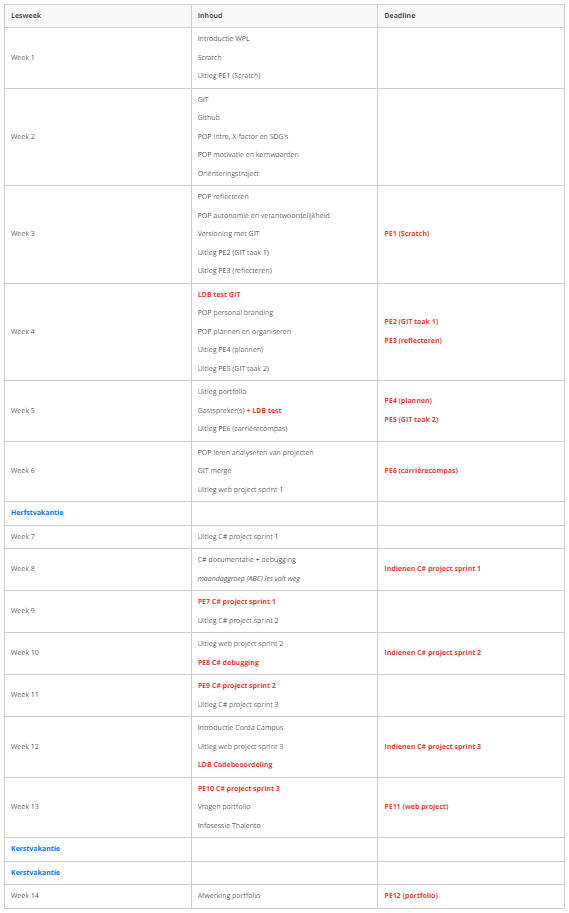
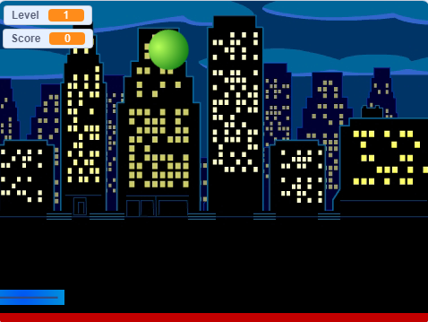
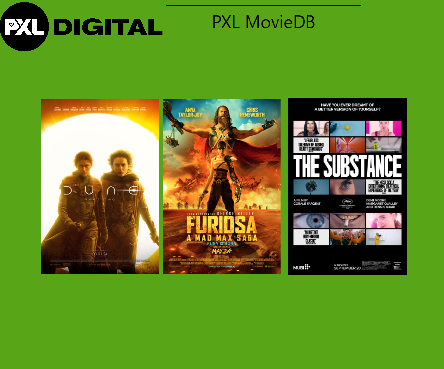
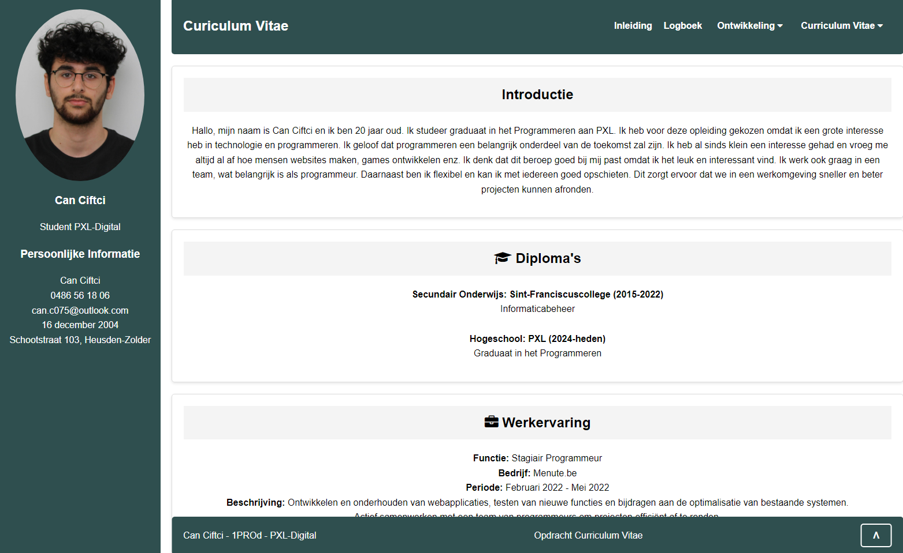
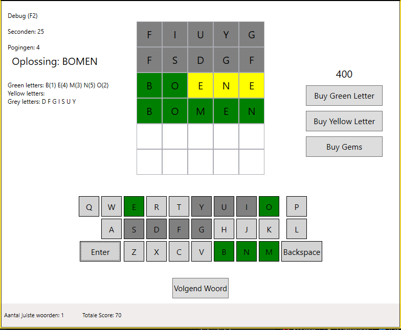
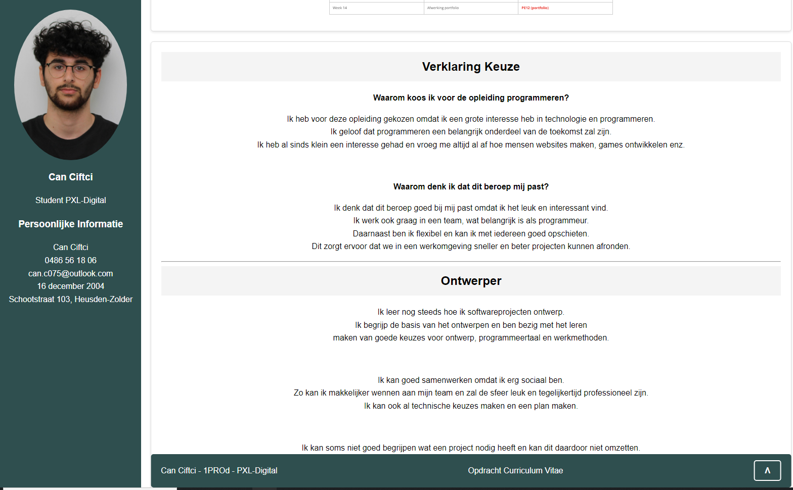

Hallo allemaal, op deze website laat ik zien wat ik heb geleerd en gemaakt tijdens mijn opleiding
programmeren.
Het is een overzicht van mijn werk, mijn vaardigheden en hoe ik mijzelf ontwikkel.
Je kunt hier mijn CV bekijken, mijn planning volgen en lezen
over de opdrachten en projecten die ik heb gedaan. Ook schrijf ik over wat ik al goed kan, wat ik nog
wil leren, en hoe ik mezelf blijf verbeteren.
Dit portfolio laat zien hoe ik groei als programmeur en waarom dit vak goed bij mij past.

Waarom koos ik voor de opleiding programmeren?
Ik heb voor deze opleiding gekozen omdat ik een grote interesse heb in technologie en programmeren.
Ik geloof dat programmeren een belangrijk onderdeel van de toekomst zal zijn.
Ik heb al sinds klein een interesse gehad en vroeg me altijd al af hoe mensen websites maken, games
ontwikkelen enz.
Waarom denk ik dat dit beroep mij past?
Ik denk dat dit beroep goed bij mij past omdat ik het leuk en interessant vind.
Ik werk ook graag in een team, wat belangrijk is als programmeur.
Daarnaast ben ik flexibel en kan ik met iedereen goed opschieten.
Dit zorgt ervoor dat we in een werkomgeving sneller en beter projecten kunnen afronden.
Ik leer nog steeds hoe ik softwareprojecten ontwerp.
Ik begrijp de basis van het ontwerpen en ben bezig met het leren
maken van goede keuzes voor ontwerp, programmeertaal en werkmethoden.
Ik kan goed samenwerken omdat ik erg sociaal ben.
Zo kan ik makkelijker wennen aan mijn team en zal de sfeer leuk en tegelijkertijd professioneel zijn.
Ik kan ook al technische keuzes maken en een plan maken.
Ik kan soms niet goed begrijpen wat een project nodig heeft en kan dit daardoor niet omzetten.
Vorig jaar had ik hier moeite mee, maar ben verder aan het oefenen zodat ik die probleem later niet heb.
Ik ben bezig met het schrijven van code en het ontwikkelen van software.
Ik leer de verschillende tools en werkmethodes die gebruikt worden in softwareontwikkeling.
Het begrijpen van code is helemaal geen probleem voor mij.
Ik kan redelijk goed programmeren in verschillende talen en werk goed met eenvoudige gegevensstructuren
en code.
Het beheren van de digitale werkomgeving en het werken met grotere projecten is iets wat ik nog moet leren.
Ik ben bezig met het leren testen van software en het controleren of alles goed werkt.
Ik kan eenvoudige testen uitvoeren en de werking van de software controleren.
Meestal kan ik de feedback van de testen niet begrijpen en kan ik niet verder gaan.
Ik ben iemand die snel geïrriteerd geraakt, dus ben ik ermee bezig om ermee
om te gaan zodat de sfeer binnen het team niet slecht word.
Ik kan goed samenwerken in een team en werk met anderen om problemen op te lossen.
Ik kan mijn werk goed uitleggen en documenteren.
Ik kan ook meerdere talen spreken zoals: Nederlands, Turks en Engels
Ik raak te snel geïrriteerd en word snel boos. Hier moet ik zeker aan werken.
Ik weet dat de IT-wereld altijd verandert en ik probeer nieuwe technologieën en ontwikkelingen te volgen.
Ik ken de regels rond veiligheid en privacy in IT, en hoe ik deze moet toepassen in mijn werk.
Ik moet meer zoeken naar nieuwe dingen om te leren in IT.
Ik kan mijn werk niet zo goed beoordelen en verbeteren.
Begin van het academiejaar moesten we een scratchproject maken waar de bal de grond niet mocht raken.
Je had een paddle waar je ervoor moest zorgen dat de bal in de lucht bleef. Het werd steeds moeilijker.
Hoe langer je de bal in de lucht blijft houden hoe moeilijker het spel wordt.
Voor mij persoonlijk waren er geen uitdagingen, want ik had al ervaring met programmeren.
Ik begreep wat de knoppen deden dus was het gewoon bij elkaar puzzelen.

Na het scratchproject moesten we een taak maken op Visual Studio.
We moesten een "database" maken met daarin films die PXL-Digital aan te bieden heeft.
Dit was weer niet echt een uitdaging voor mij, maar ik had per ongeluk een private repository gemaakt.
Voor de rest was het vrij makkelijk en ging het vlot.

Voor de 2de git taak moesten we een CV (Curriculum Vitae) maken. Dit was een web taak dat enkel
gecodeerd is met HTML/CSS.
Dit was een leuke ervaring omdat ik ervan hou om een website te maken. Je hebt er volledig controle
over.
Dat is wat programmeren moet zijn, volledige controle en je eigen creativiteit tot leven brengen.
Het enige waar ik moeite mee had was de teksten schrijven, want ik ben daar niet zo goed in.

Vervolgens moesten we beginnen aan het project. Er werd enkel gewerkt in Visual Studio. We moesten de
game "Wordle" maken.
Dit was erg uitdagend voor mij omdat ik niet de beste ben in C#.
Ik heb af en toe moeten zoeken hoe ik een fout kon oplossen.
Dat is goed voor mij, want later zal ik ook zulke problemen hebben en kan ik makkelijker
vinden wat ik zoek want dan weet ik wel hoe ik moet opzoeken.

Tenslotte ben ik bezig om mijn portfolio af te maken. Dit is de laatste opdracht voor WPL1. Dit was erg
fijn om te maken.
Voor HTML/CSS heb ik ook niet echt moeilijkheden omdat het vrij duidelijk en logisch is.
Dus had niet echt persoonlijke uitdagingen buiten het veel typen.
